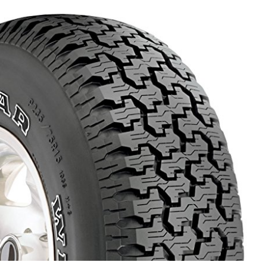

Tires have been a vehicle's most important safety feature for more than a century. After all, they are a vehicle's only contact with the road. Even the brawniest engine, strongest brakes, and most advanced anti-skid system are at the mercy of the tire's grip on the road.
Every move a driver makes with the steering wheel, brake or gas pedal is transmitted to the road through the four notepad-sized contact patches of the tires.
So, if a consumer has tires that are worn, under-inflated, or not suited to the environment, they put themselves, their vehicle, and others at risk.
If you're looking to save money, get the best fuel economy,
or buy the best quality tire then this article is for you.
Not all tires are created equal! Here is the list of recommended one.

Goodyears tire provides all season high performance traction for sedans and sports coupes. It features an asymmetrical construction which enhances its handling, traction, and improves the comfort of your ride in straight driving. It is made with wide lateral grooves and aggressive shoulder tread blocks to provide you with better handling and reliable traction in all weather including dry, wet and snow conditions. This tire will give you a good all year round performance. Goodyear Eagle RS-A Radial Tire details:
- Size: P235/75R15 105S
- Section width of 235 millimeters
- Aspect ratio of 75
- Rim diameter of 15 inches
- Speed Rating of S
- The tire weighs 27.6 pounds
Radial tires are fitted with steel belts to offer stiffness on the road. They have thick shoulders and flexible side walls that protect the interior from damage and shock, enabling you to enjoy a smooth comfortable ride. These tires are made with bead wires which hold the tire to the rim, and provide the tires with more durability and better maneuverability. These tires feature a chaffer that protects the ply cord from the heat generated by the rubbing of the rim flange and the bead. Radial tires are constructed to offer longer life and better maneuverability.


Wraparound tread gives a rugged look and increases puncture resistance Deep two-step sipes extend tread life and increase performance on wet roads Tiered side grooves for more predictable cornering 7-8% wider footprint than the competition for increased road contact and grip
- Product Dimensions 31.7 x 31.7 x 10.5 inches
- Section width of 265 millimeters
- Aspect ratio of 75
- Rim diameter of 16 inches
- Speed Rating of T
- The tire weighs 39.8 pounds and has a maximum load capacity of 1718 pounds.

The MICHELIN DEFENDER is Michelin’s best standard passenger car tire Exceptionally long-lasting all-season tire Outstanding grip for short braking and peace of mind in stressful driving situations Quiet, comfortable ride Rolls super-smoothly to save money on fuel
- Product Dimensions 29 x 29 x 9 inches
- Section width of 225 millimeters
- Aspect ratio of 65
- Rim diameter of 17 inches
- Speed Rating of T
- The tire weighs 25.8 pounds and has a maximum load capacity of 1718 pounds.

The symmetrical 4-Rib pattern provides superior ride and stability Advanced tread compound enhances water performance Circumferential center channel and extended lateral grooves provide superior water evacuation Tread block sipping enhances ride comfort and reduces noise High rigidity construction supports high speed handling
- Size: P245/65R17 105S
- Section width of 245 millimeters
- Aspect ratio of 65
- Rim Diameter of 17 inches
- Speed Rating: S (112 MPH)
- The tire weight 32.6 pounds and has a maximum load capacity of 1718 pounds.

- Size: P245/65R17 105S
- Section width of 245 millimeters
- Aspect ratio of 65
- Rim Diameter of 17 inches
- Speed Rating: S (112 MPH)
- The tire weight 32.6 pounds and has a maximum load capacity of 1718 pounds.

Featuring a silica-enhanced, all-season tread compound, the PureContact with EcoPlus Technology incorporates Continental's Tg-F Polymers and +Silane additives to improve treadwear, fuel efficiency and traction on slippery roads. The compound is molded into a computer-optimized asymmetric tread design that reduces pattern noise while chamfered tread block edges enhance dry-road handling. Independent tread blocks are siped to provide additional biting edges while Continental’s Traction Grooves (vertical ridges in the circumferential grooves) promote three-dimensional snow-to-snow traction. PureContact with EcoPlus Technology’s tread pattern features Tuned Performance Indicators — visible letters molded into the outboard shoulder to alert drivers of the tire's potential performance in various weather conditions. A visible "DWS" indicates the tire has sufficient tread depth for dry conditions, as well as wet roads and light snow. After the "S" has worn away, the remaining "DW" indicates the tire only has sufficient tread depth for dry and most wet road conditions. And after the "W" and "S" have both worn away, the remaining "D" indicates the tire has appropriate tread depth for dry conditions only. The tire's internal structure features twin steel belts reinforced with spirally wound jointless polyamide to blend high-speed durability with ride uniformity. Continental's ComfortRide Technology includes a cushioning layer of rubber to absorb vibrations caused by road surface irregularities. PureContact tires also feature weight-optimized construction to reduce weight and rolling resistance.
- Product Dimensions 26.3 x 26.3 x 8.5 inches
- Section width of 215 millimeters
- Aspect ratio of 55
- Rim Diameter of 17 inches
- Speed Rating V
- The tire weight 20.7 pounds and has a maximum load capacity of 1718 pounds.

High-performance summer tires for sporty coupes and sedans
Reinforced shoulder blocks for cornering stability
Asymmetric tread design for increased handling
Three wide longitudinal grooves ensure high hydroplaning resistance
S-shaped sipes are designed to reduce rolling noise
- Product Dimensions 28.7 x 28.7 x 10.9 inches
- Section width of 275 millimeters
- Aspect ratio of 40
- Rim diameter of 20 inches
- Speed Rating Z
- The tire weight 35.5 pounds and has a maximum load capacity of 1718 pounds.

All-season touring tire Aggressive shoulder tread blocks for increased cornering grip Asymmetric construction for enhanced handling and ride quality during straight driving Wide lateral grooves for improved wet traction Reliable traction in multiple driving conditions for year-round performance
- Tire size-205/55R16 89H
- Section width of 205mm
- Aspect ratio of 55
- Rim diameter of 16 inches
- The tire weighs 20.2 pounds and has a maximum load capacity of 1718 pounds.